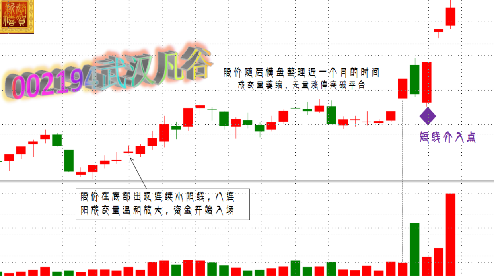
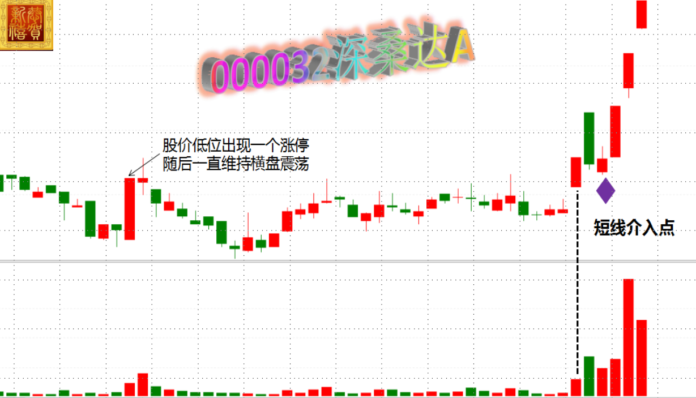
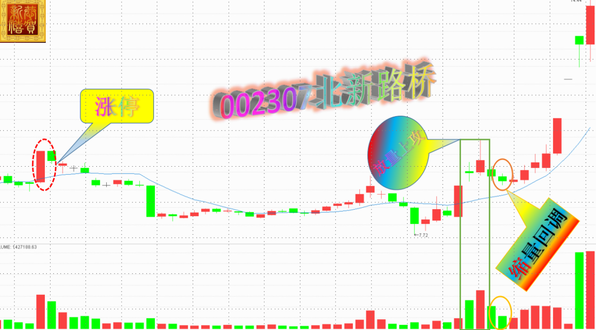
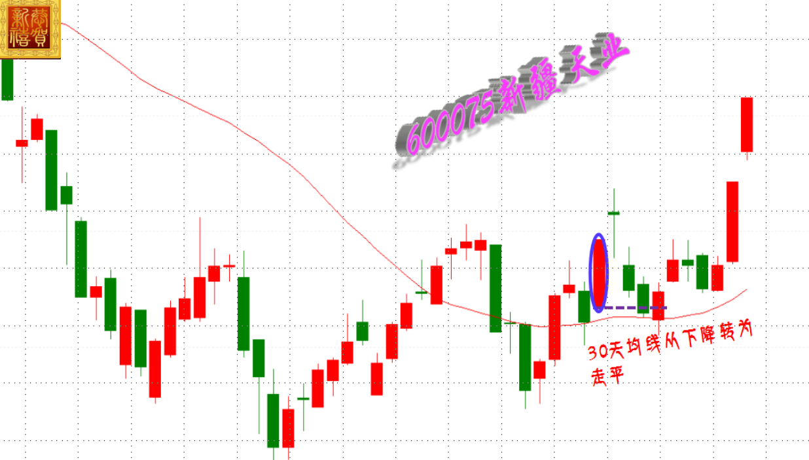
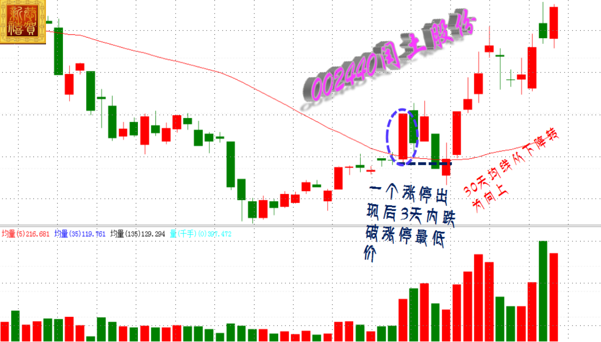
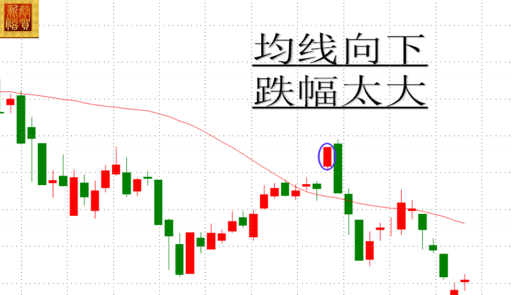
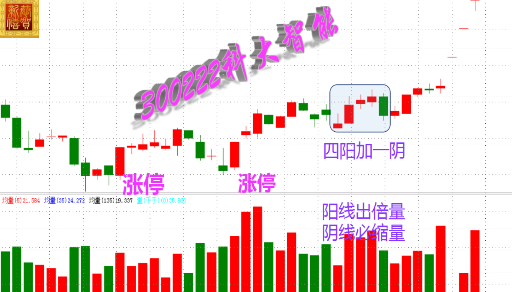
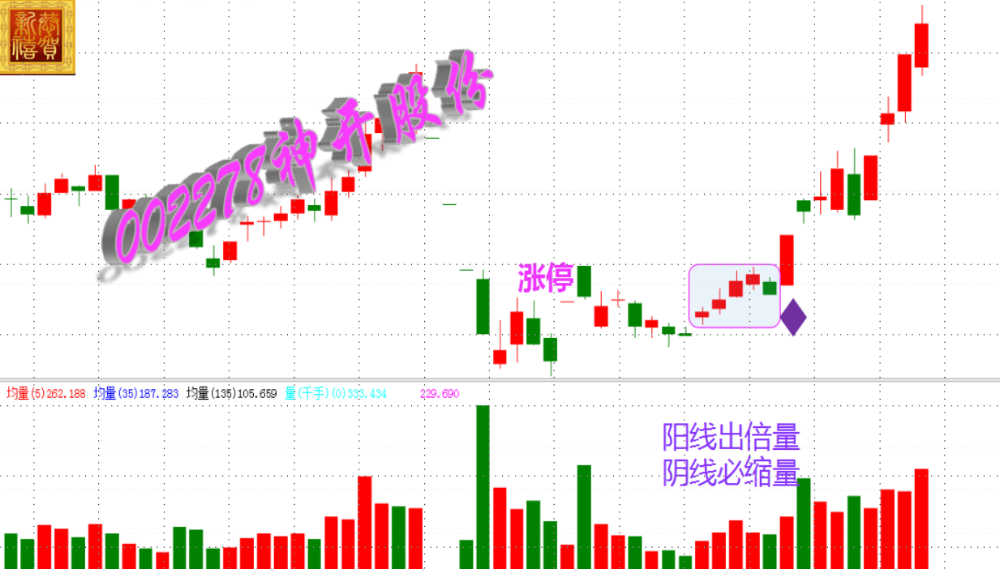
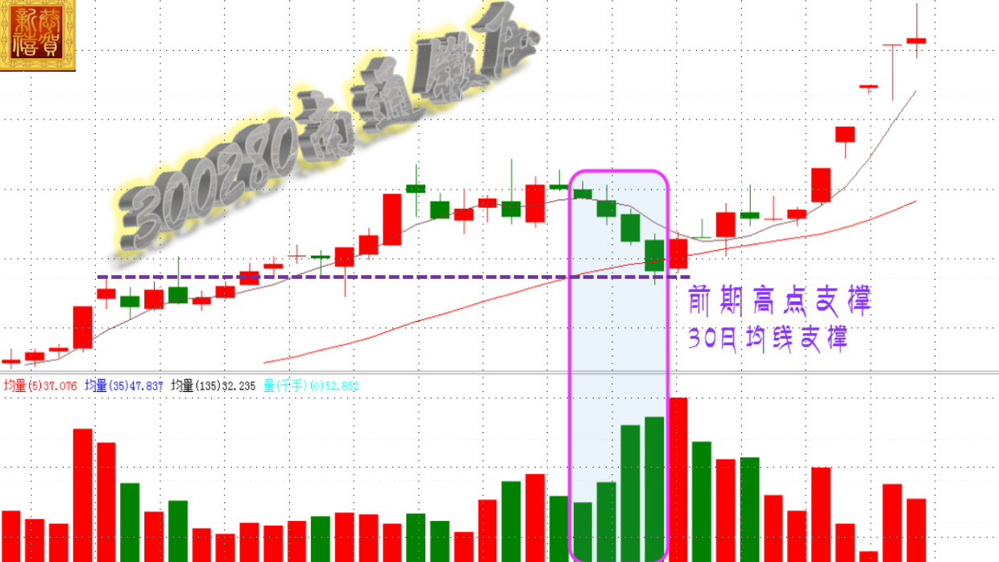

股市投机套利法宝--一日万金模型
模型起源
话说东汉末年；刘备取益州，孙权令诸葛瑾找刘备索要荆州。刘备不答应，孙权极为恼恨，便派吕蒙率军取长沙、零陵、桂阳三郡。长沙、桂阳蜀将当即投降。刘备得知后，亲自从成都赶到公安，派大将关羽争夺三郡。孙权也随即进驻陆口，派鲁肃屯兵益阳，抵挡关羽。双方剑拔弩张，孙刘联盟面临破裂，在这紧要关头，鲁肃为了维护孙刘联盟，不给曹操可乘之机，决定当面和关羽商谈。
“肃邀羽相见，各驻兵马百步上，但诸将军单刀俱会”。双方经过会谈，缓和了紧张局势。随后，孙权与刘备商定平分荆州，“割湘水为界，于是罢军”，孙刘联盟因此能继续维持。
单刀赴会考验的是一个人的勇气和智慧，只有二者皆备方能获得最大收益
模型一变
此方法为短线，10%为最小盈利目标当达到预期后股价不创新高或收阴卖出
分时条件：黄色均价线向上，股价回踩不破为买点，（突破当天分时筹码密集区则当天大涨或者涨停的概率高）
第三日低开高走突破阴线收盘价时意味短线资金回补，可在盘中及时介入，低开后的影线越短越好
次日高开低走出现倍量阴线，一般高开幅度大于3%（真阴和假阴均可）
涨停小量突破平台，有跳空缺口更佳，成交量和横盘期间的最大量相比缩
股价突破前横盘时间不少于一个月，且最后横盘阶段量能萎缩


模型二变
股价在下跌或者底部盘振时需有放量涨停板
涨停板过后股价需再创新低，且在四十个交易日左右从新回到10日均线
连续三天以上的放量上攻
回调时间不得超过2个交易日，且回调缩量，幅度不得跌破三日上涨空间


模型三变
天下武功，唯快不破。客观事物的发展具有合乎规律的连续性，事物发展是按照它本身固有的规律进行的，在一定条件下，只要规律赖以发生作用的条件不产生质的变化，则事物的基本发展趋势在未来就还会延续下去。
股价在经过中期下跌后风险释放完毕，在底部或者启动初期出现涨停
随后三天内股价快速调整跌破涨停最低价，但也不宜跌破涨停最低价幅度过大，通常幅度限定在10%以内
中短期均线系统向上且没被破坏，通常30日均线应向上运行，且最好股价调整在30日均线附近支撑有效
当股价止跌企稳出现二根方向性K线投资者即可逢低买入。



模型四变
龍岂池中物，乘蕾欲上天，兵临城下、蓄势待发意指股价有随时准备进攻的形态
股价在震荡整理的过程中出现连续三天或四天阳线，中间没有涨停，小阳或者中阳为主，但整体涨幅不大不应超过20%，且阳线必须有倍量，此为蓄势
活跃：有涨停基因，在三个月内出现过涨停，且没有出货迹象
连续阳线后出现回调阴线，阴线通常为平开或者低开，量能必须缩量，此为待发，阴线数量必须小于阳线数量，通常一天为最强形态
激进型以阴线次日收阳或者出现方向性K线买入，稳健型以突破阴线最高价买入


模型五变
凤凰涅槃浴火重生，神鸟只有经历烈火的煎熬和痛苦的考验，才能获得重生，并在重生中达到升华
股价回调或者破位创新低的位置出现连续阴线的下跌，会造成恐慌情绪明显，其中至少要出现大阴线的下跌，即今日收盘价小于昨日收盘价小于前日收盘价
量能依次放大，今日成交量大于昨日成交量大于前日成交量
上升趋势中股价回调在三十日均线附近，下降趋势中则乖离较大
明日收盘价大于今日收盘价，当出现假阴线时应继续等待真阳的出现才是买点


-
1
-
2
-
3
-
4
-
5
-
6
-
7
-
8
-
9
-
返回战法列表